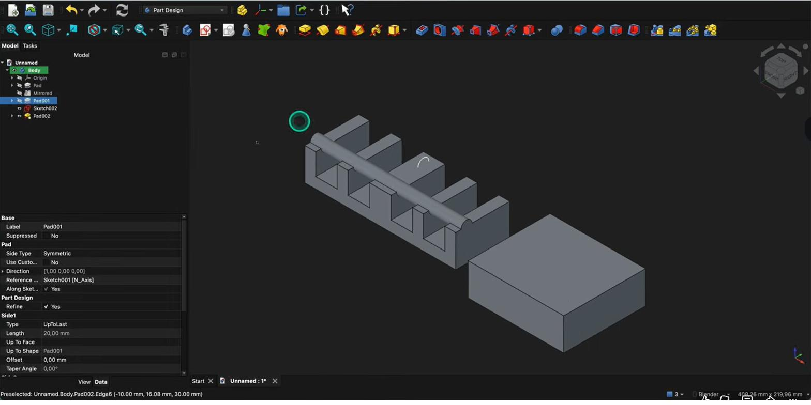

History & fouten herstellenHistorique & correctionsHistory & fixing errors
Je hebt een hele behuizing opgebouwd uit losse stappen. Die stappen vormen samen de modelboom — je volledige ontwerpgeschiedenis. In dit hoofdstuk leer je elke stap terug bewerken en hoe je het oplost als er iets fout gaat.Les étapes forment l'arbre, votre historique. Apprenez à tout rééditer et à corriger les erreurs.Your steps form the tree — your full design history. Learn to re-edit any step and to fix things when they break.
- elke stap in de feature-boom terug bewerkenrééditer chaque étape de l'arbrere-edit any step in the feature tree
- een schets achter een Pad of een fillet aanpassenmodifier un croquis ou un congéedit a sketch behind a Pad or a fillet
- fouten in de boom herkennen en herstellenrepérer et corriger les erreursspot and fix errors in the tree
De modelboom is je volledige ontwerpgeschiedenis. Elke stap blijft bewerkbaar; het model herberekent automatisch.L'arbre est tout l'historique ; chaque étape reste modifiable.The tree is your full design history; every step stays editable and recomputes.
- Bewerk een feature: dubbelklik hem in de boom (of selecteer hem en gebruik het eigenschappen-paneel onderaan).Éditer : double-clic (ou panneau de propriétés).Edit a feature: double-click it in the tree (or use the properties panel below).
- Schets achter een Pad: vouw de Pad open en dubbelklik de schets om hem te wijzigen.Croquis d'un Pad : dépliez, double-clic.Sketch behind a Pad: expand the Pad and double-click the sketch.
- Fillet/chamfer: dubbelklik de bewerking → Toevoegen en klik extra randen, of verwijder er een.Congé : double-clic → Ajouter/retirer des arêtes.Fillet/chamfer: double-click → Add and pick extra edges, or remove one.
01De boom is je geschiedenisL'arbre = l'historiqueThe tree is your history
Alles wat je bouwt, komt als een stap in de modelboom: Pad, Pocket, Fillet, Patroon … In die volgorde berekent FreeCAD je model, van boven naar onder. Het mooie: niets is definitief. Je kunt elke stap terug openen, een maat of schets aanpassen, en FreeCAD herberekent de rest.Tout devient une étape (Pad, Cavité, Congé…), calculée de haut en bas. Rien n'est figé : rééditez à volonté.Everything you build becomes a step (Pad, Pocket, Fillet, Pattern…), computed top to bottom. The beauty: nothing is final — reopen any step and FreeCAD recomputes the rest.

02Een feature bewerkenÉditer une featureEditing a feature
Dubbelklik een stap om hem te bewerken. Wil je de vorm achter een Pad veranderen? Vouw de Pad open en dubbelklik de onderliggende schets. Wil je een rand extra afronden? Dubbelklik de fillet en voeg de rand toe. Je hoeft dus nooit opnieuw te beginnen — je verfijnt wat er al staat.Double-clic pour éditer ; croquis sous un Pad ; ajouter une arête à un congé. On affine, on ne recommence pas.Double-click a step to edit it. Change the shape behind a Pad? Expand it and edit the sketch. Round one more edge? Double-click the fillet and add it. You never restart — you refine.
03Fouten herkennen en herstellenRepérer et corrigerSpotting and fixing errors
Gaat er iets mis, dan zet FreeCAD een foutmarkering bij de betrokken stap. Lees de melding, dubbelklik de stap en herstel de oorzaak — vaak een verwijzing die niet meer klopt (zie H19). Werk van boven naar onder: een fout bovenaan veroorzaakt meestal de fouten eronder. Een stap die je even niet nodig hebt, kun je op onderdrukt (suppressed) zetten in plaats van te verwijderen.Une erreur apparaît : double-clic, corrigez la cause (souvent une référence, H19). De haut en bas. « Suppressed » pour désactiver.An error marks the step. Read it, double-click and fix the cause — often a stale reference (H19). Work top-down. Set a step to suppressed to disable it without deleting.
Je model is nooit af-en-vast: elke stap in de boom blijft bewerkbaar, en het model herberekent zichzelf na elke wijziging.Le modèle reste toujours modifiable ; il se recalcule.Your model is never locked: every step stays editable and the model recomputes after each change.
Selecteer een feature en kijk onderaan in het eigenschappen-paneel: daar staan alle instellingen (lengte, type, richting …) die je rechtstreeks kunt aanpassen — vaak sneller dan het hele bewerk-venster openen.Sélectionnez une feature : le panneau de propriétés permet des réglages rapides.Select a feature and check the properties panel below for quick edits (length, type, direction …).
Connectorgat 2 mm te hoog? Dubbelklik de schets, versleep het gat, klaar. Geen hertekenwerk — net daarom is parametrisch modelleren zo krachtig voor behuizingen die je blijft verbeteren.Trou mal placé ? Double-clic, déplacez. Sans recommencer.Connector hole 2 mm too high? Double-click the sketch, drag the hole, done. No redrawing.
Open een eerder onderdeel. Bewerk de schets achter een Pad (verander een maat), voeg een rand toe aan een bestaande fillet, en zet één stap tijdelijk op onderdrukt. Bekijk telkens hoe het model herberekent.Modifiez un croquis, ajoutez une arête à un congé, « suppressed » une étape.Edit the sketch behind a Pad, add an edge to a fillet, and set one step to suppressed. Watch it recompute.
04Veelgemaakte foutenErreurs fréquentesCommon mistakes
- Een nieuwe stap maken i.p.v. de bestaande bewerken. Je boom wordt rommelig. Bewerk wat er al staat.Nouvelle étape au lieu d'éditer.Adding a new step instead of editing. Edit what's there.
- Onderaan herstellen terwijl de oorzaak bovenaan zit. Werk van boven naar onder.Corriger en bas alors que la cause est en haut.Fixing at the bottom when the cause is up top. Work top-down.
- Verwijderen i.p.v. onderdrukken. Wil je iets tijdelijk uit? Gebruik onderdrukt (suppressed).Supprimer au lieu de « suppressed ».Deleting instead of suppressing. Use suppressed to toggle off temporarily.
05Samenvatting
De modelboom is je ontwerpgeschiedenis: elke stap blijft bewerkbaar via dubbelklik of het eigenschappen-paneel, en het model herberekent. Fouten los je op door de betrokken stap te bewerken (vaak een verwijzing, H19), van boven naar onder. Met onderdrukken zet je een stap tijdelijk uit.L'arbre = historique éditable (double-clic/propriétés) ; corrigez de haut en bas ; « suppressed » pour désactiver.The tree is editable history (double-click/properties); fix errors top-down (often a reference, H19); suppress to disable a step.
- Dubbelklik een stap om hem te bewerken; alles herberekent.Double-clic pour éditer.Double-click a step to edit; it recomputes.
- Fouten: bewerk de stap, herstel de verwijzing (H19), van boven naar onder.Erreurs : corrigez la référence (H19).Errors: edit the step, fix the reference (H19), top-down.
- Onderdrukken = een stap tijdelijk uitzetten.« Suppressed » = désactiver.Suppress = temporarily disable a step.